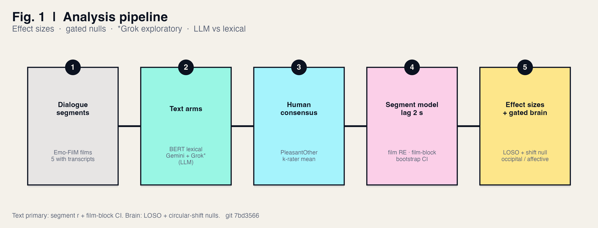

Methods
Two arms share the same human continuous targets. Significance is withheld; we report effect sizes gated by positive controls and circular-shift nulls.
Text arm
- Dialogue from official subtitles or Whisper; contamination filters (songs, credits, recited verse).
- Per-segment BERT (and DistilBERT / SiEBERT robustness models) and Gemini valence → 1 Hz grid, NaN when silent.
- Optional ±3-segment context condition (four films; LLM gains on dialogue-driven titles; per-segment BERT does not show a coherent lift).
- Agreement: Pearson r vs human items; multi-film pool with film as bootstrap block (500 resamples, 95% CI).
- Extended to all 50 GRID / appraisal / bodily / discrete items (ds004872 consensus series).
Brain arm
- Subjects: five lowest-motion runs per film (pre-specified by FD mean), Payload & Tears of Steel only.
- Estimator: Ridge (α = 10 000), leave-one-subject-out (LOSO); within-fold Pearson retained only as legacy single-subject metric.
- Gate 1 — positive control: planted signal recovered via LOSO at the ~100 s valence timescale (SNR grid); weak recovery → uninterpretable, not “null.”
- Gate 2 — circular-shift null: real LOSO mean must clear its own shift-null mean by >1 null SD.
- Masks: occipital (posterior MNI gray matter, y < −60 mm); affective network = insula ∪ vmPFC ∪ amygdala (Harvard–Oxford cortical/subcortical atlases).
- Visual residualization: regress low-level visual features out of the target (not out of BOLD) so residual hits are not pure visual confounds of the label.
- Multi-item brain: same gates per item; network on all 50; sub-ROIs on high-variance subset.


Physio & audio
- BIDS physio 1000 Hz (PPG → HR envelope, EDA, RESP) aligned to film onset; subject-mean series vs continuous annotations.
- Audio 1 Hz features (RMS, centroid, ZCR, …) for Tears of Steel (CC Blender open movie); truncated to annotation length (588 s).
- Payload experiment cut / audio not redistributed with OpenNeuro; multimodal fusion for Payload deferred until media is available.
Reporting policy (no p-value theater)
Continuous film annotations are strongly autocorrelated (median 1/e lag often 30–55 s; slower drift 80–110 s is also documented in the project narrative).
Second-scale block bootstrap on single short films is too liberal. We therefore report
effect sizes, film-block CIs for text, and shift-null + positive-control gates for brain —
not NHST stars on autocorrelated series.
Hard limits (always stated)
- Brain n = 5 subjects × 2 films — film-dependent DECODES/null is exploratory for population inference.
- Small brain r (~0.06–0.08 on Payload affective valence) — real but modest.
- Text = dialogue channel only; sparse-dialogue films are expected weak text nulls.
- Models frozen to study versions (Gemini 3.5 Flash / BERT family as run).